Swansea Route 103
The Route 103 Corridor Study was one of the first projects that I managed from start to finish. The study analyzed opportunities to create a village-style main street along one of the Town's smaller commercial corridors that passes through the densest residential area in town.


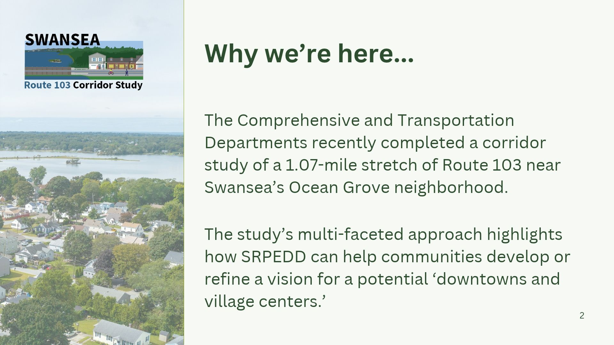

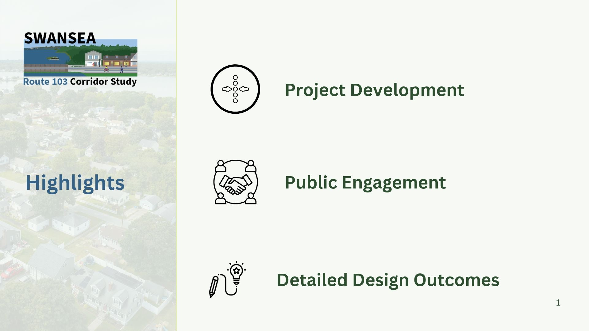

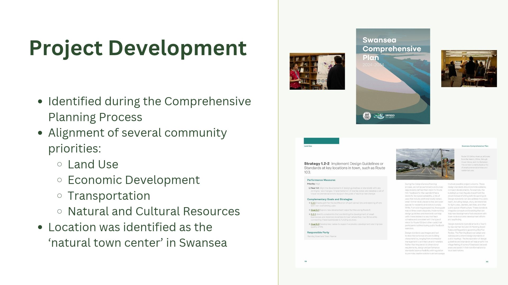

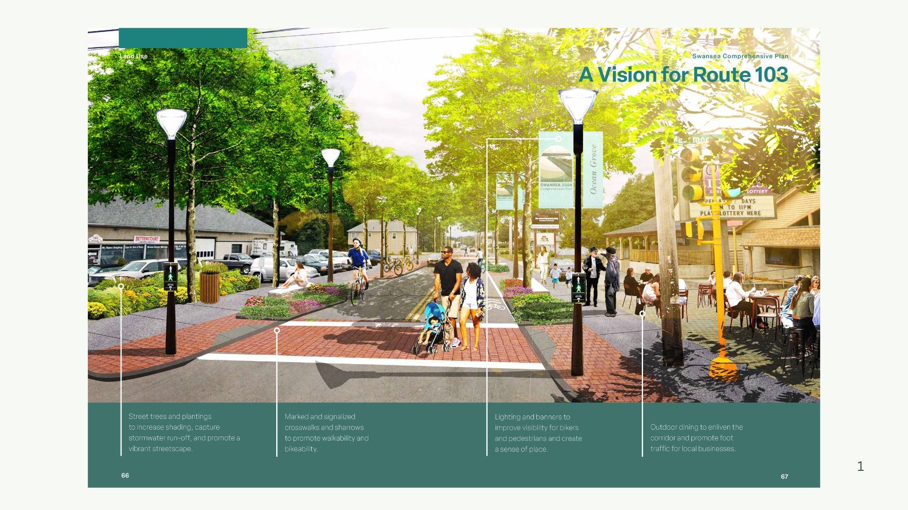

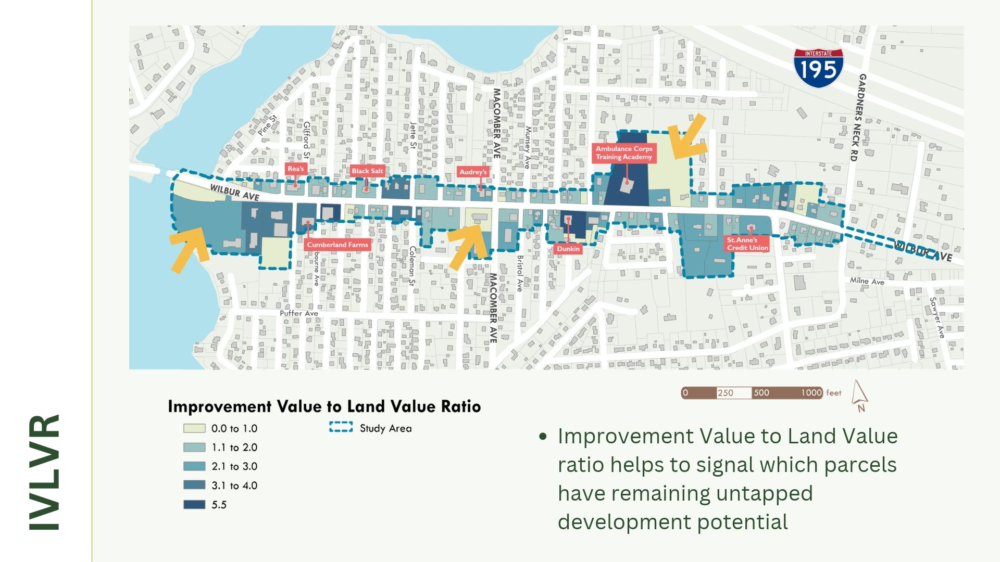

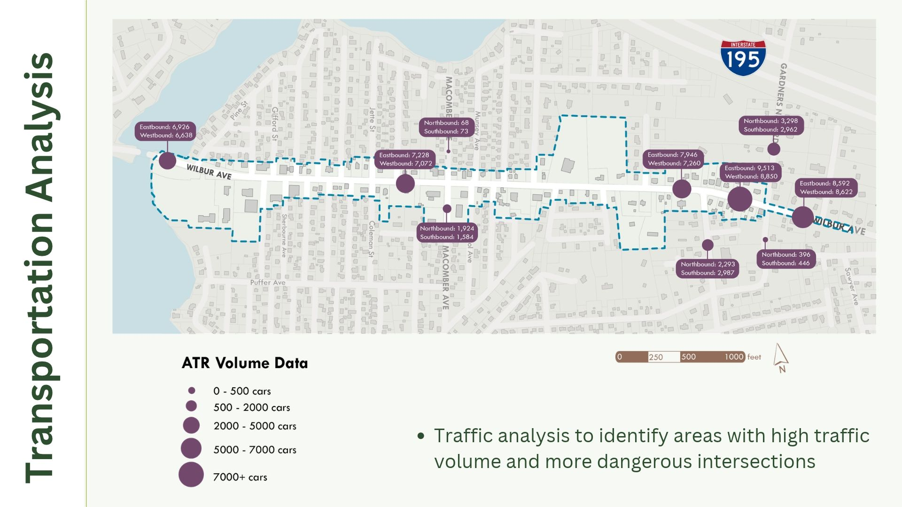

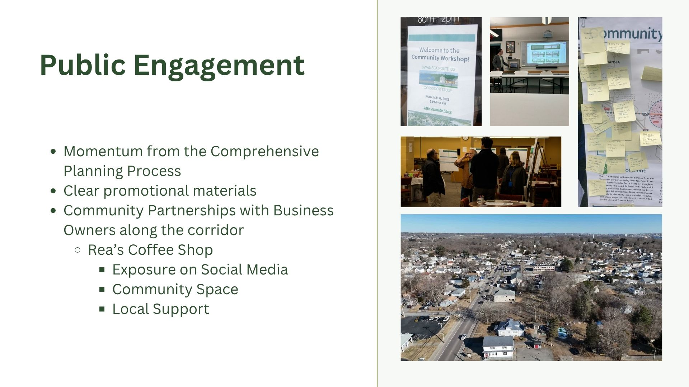

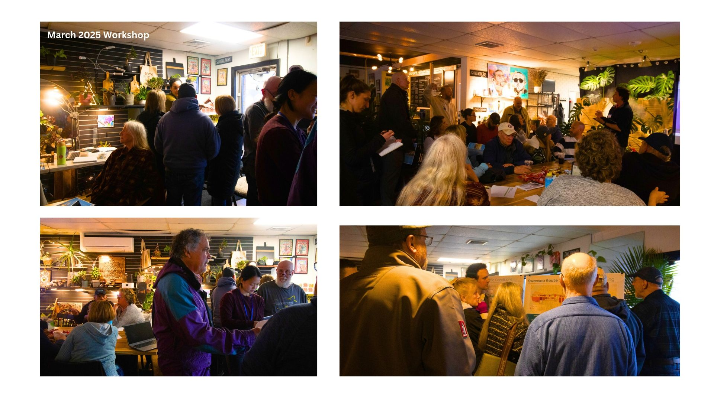

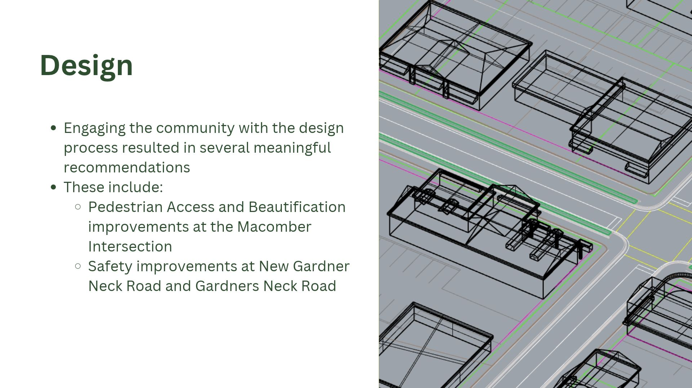

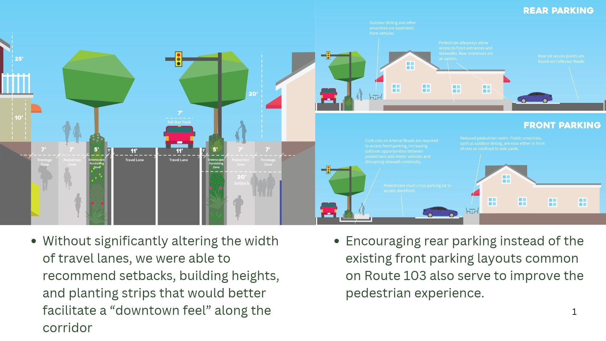

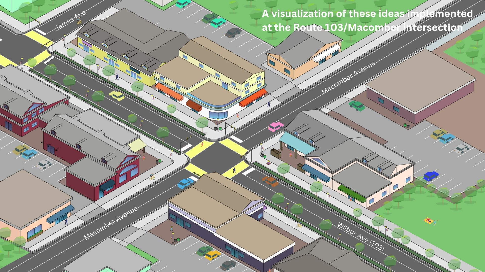

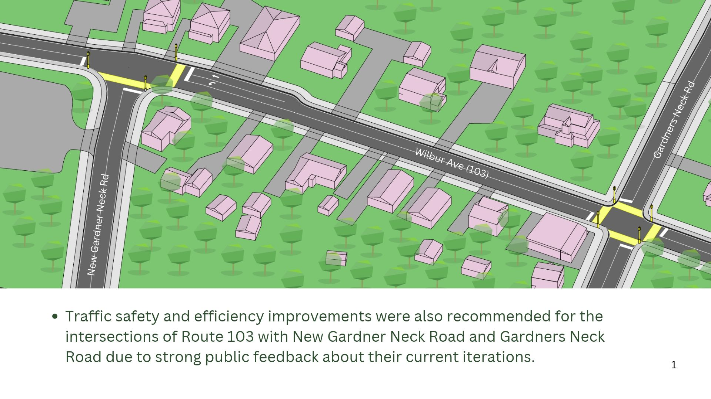

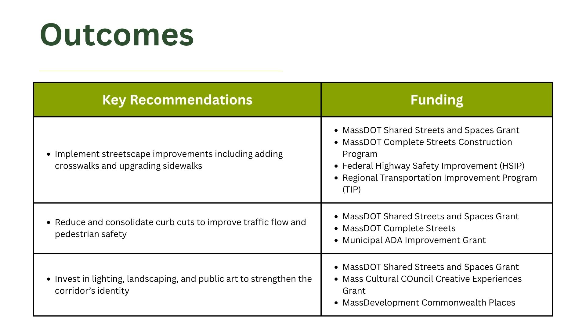

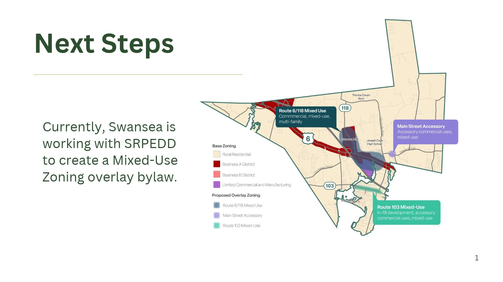